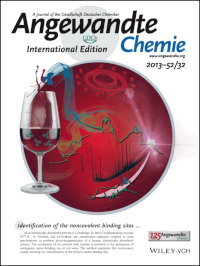

Alexandre Giuliani
Spectroscopy & Spectrometry
Outreach
2018
SOLEIL highlight about our collaborative Publication entitled «Extreme ultraviolet (XUV) radiation: a means of ion activation for tandem mass spectrometry» in Anal. Chemistry.
SOLEIL highlight about our publication «Photoionization of the Buckminsterfullerene Cation» in J. Phys. Chem. Lett.
2015
SOLEIL and INRA (in french) highlights about our publication «High-energy photon activation tandem mass spectrometry provides unprecedented insights into the structure of highly sulfated oligosaccharides extracted from macroalgal cell walls» in Analytical Chemistry.
SOLEIL highlight on our collaborative work entitled «Gas-phase VUV Photoionisation and Photofragmentation of the Silver Deuteride Nanocluster [Ag10D8L6]2+ (L = bis(diphenylphosphino)methane). A Joint Experimental and Theoretical Study» in Phys. Chem. Chem. Phys.
2013
Press release from INRA, CNRS, associated with publication entitled «Photodissociation and Dissociative Photoionization Mass Spectrometry of Proteins and Noncovalent Protein-Ligand Complexes» in Angewandte Chemie Int. Ed.
Cover 1 of Angewandte Chemie Int. Ed. associated with our publication entitled «Photodissociation and Dissociative Photoionization Mass Spectrometry of Proteins and Noncovalent Protein-Ligand Complexes»
2012
SOLEIL highlight about publication «Nanosolvation-Induced Stabilization of a Protonated Peptide Dimer Isolated in the Gas Phase» in Angewandte Chemie Int. Ed.
SOLEIL highlight about our publication entitled «Structure and Charge-State Dependence of the Gas-Phase Ionization Energy of Proteins» in Angewandte Chemie Int. Ed.
2011
SOLEIL highlight about our publication «Valence shell direct double photodetachment in polyanions» in New J. Phys.
SOLEIL highlight about our publication «A differential pumping system to deliver windowless VUV photons at atmospheric pressure» in J. Synchrotron Rad.
2010
SOLEIL highlight associated to publication «Characterization, stoichiometry and stability of salivary protein-tannin complexes by ESI-MS and CID MS/MS» in in J. Synchrotron Rad.
Footnotes:
1
